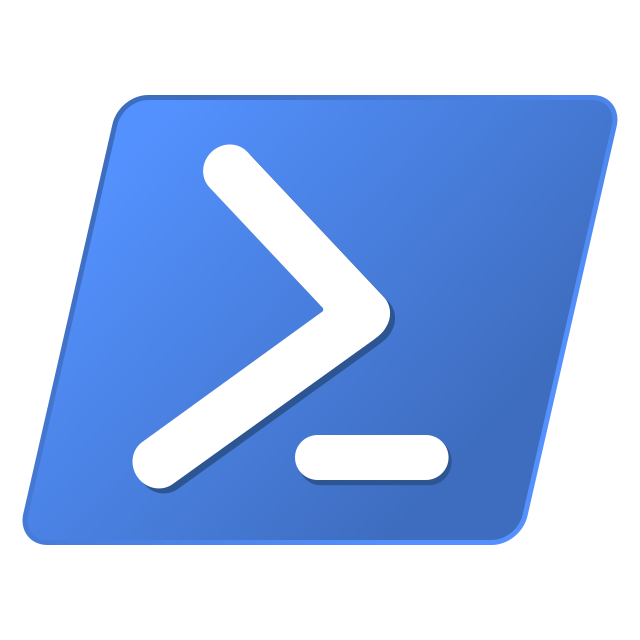
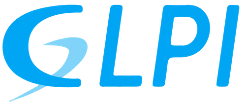
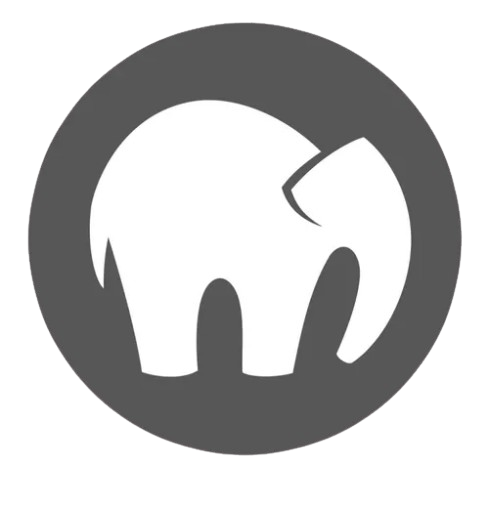

Les outils et logiciels




En reconversion professionnelle, je suis actuellement en BTS SIO (option SISR) à IRIS - MediaSchool Nice. Passionné par l’informatique et les nouvelles technologies, je me forme aux infrastructures, systèmes et réseaux après quatre ans d’expérience en logistique.
Le Brevet de Technicien Supérieur aux Services Informatiques aux Organisations (BTS SIO) s'adresse à ceux qui souhaitent se former en deux ans aux métiers d'administrateur réseau ou de développeur. Et ainsi, par la suite, intégrer directement le marché du travail ou continuer des études dans le domaine de l'informatique.
Deux options sont disponibles au sein du BTS SIO :
Au cours de mon cursus, j'ai pu obtenir plusieurs certifications et diplômes que vous trouverez ci-dessous. Les connaissances que j'ai acquises au sein de ces formations m'ont permises de développer mes compétences en informatiques. Parallèlement, j'ai également obtenu d'autres certifications grâce à ma propre initiative. J'ai réussi à obtenir des certifications supplémentaires me permettant d'approfondir mes connaissances et compétences.